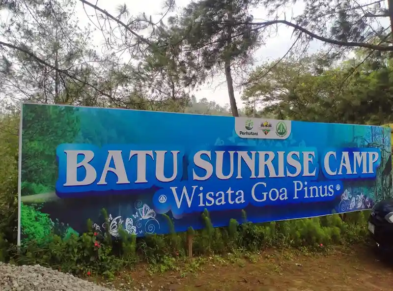

.webp)
Meninggalkan hiruk-pikuk aktivitas sehari-hari untuk sementara waktu adalah cara terbaik merestart pikiran. Salah satu daya tarik yang paling diincar oleh wisatawan ketika mengunjungi dataran tinggi adalah menikmati pendar lampu kota (City Light) di malam hari. Di Batu, Malang, pemandangan miliaran cahaya kuning yang berkelap-kelip ini seolah menjadi orkestra visual yang mampu menghapus semua penat yang bersarang.
1. Estetika yang Tak Lekang Oleh Waktu
Setiap orang yang pertama kali menyajikan pandangannya dari ketinggian Batu menuju arah pusat kota pasti akan terkesiap. Pendar lampu kota bukanlah sekadar cahaya biasa; ia melambangkan denyut kehidupan kota yang terus bergetar. Dari kejauhan, formasi lampu jalan, lampu rumah, dan bangunan bertingkat seolah bergabung membentuk karpet cahaya emas yang berpadu dengan gelapnya langit malam. Ini adalah estetika alam dan urban yang tak lekang oleh waktu.
2. Terapi Visual Terbaik untuk Healing
Selain mempercantik hasil foto liburan, menatap gemerlap lampu kota sebenarnya membawa dampak psikologis yang positif. Menurut banyak pengunjung Citylightscamp, hanya dengan duduk berdiam diri menghadap panorama city light ditemani segelas minuman hangat, mereka merasa tekanan dan beban pikiran mendadak terangkat. Pemandangan pendar lampu kota bekerja seperti terapi visual—membantu otak beristirahat dan melahirkan kembali semangat baru yang lebih jernih.
Di saat kota sibuk dengan dunianya, kita berada di atas, menikmati keindahannya tanpa harus ikut lelah di dalamnya.
3. Pengalaman Camping Sempurna ala Citylightscamp
Agar pengalaman menikmati pendar lampu kota menjadi semakin maksimal, lokasi yang tepat sangatlah menentukan. Citylightscamp telah memetakan spot strategis di area Batu Malang dengan sudut pandang terbuka tanpa halangan. Tidak sekadar menyediakan tanah lapang, kami membalut pengalaman ini dengan fasilitas tenda premium, penyediaan hidangan hangat untuk BBQ, dan area yang terjaga privasinya. Anda hanya tinggal duduk, menikmati jagung bakar sembari terus takjub pada persembahan cahaya di bawah kaki Anda.

4. Jangan Hanya Membayangkan, Segera Agendakan!
Kata-kata mungkin tidak cukup mendeskripsikan betapa epiknya pendar lampu kota di Batu Malang. Pengalaman ini harus dirasakan sendiri. Tidak perlu repot memikirkan segala persiapan teknis berkemah, karena kami sudah menyiapkan semuanya. Segera bawa teman, pasangan, atau keluarga Anda untuk mencicipi langsung healing space paling romantis di Batu bersama Citylightscamp.
.webp)